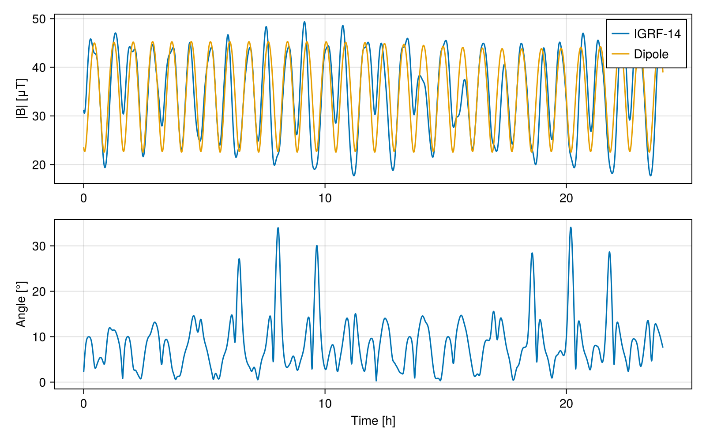
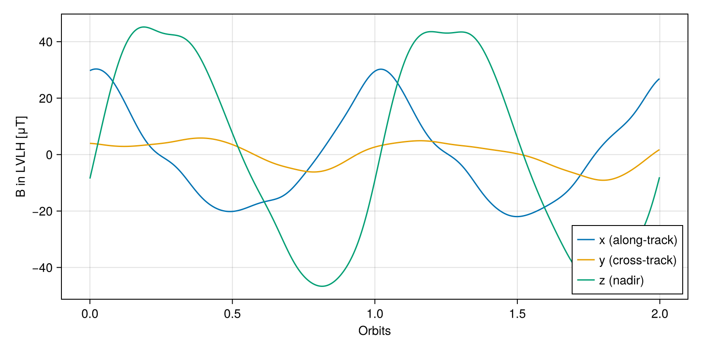
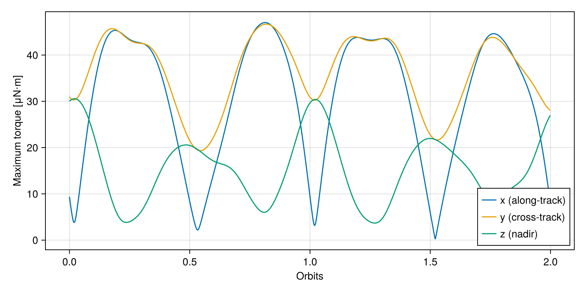

Geomagnetic Field Along a LEO Orbit
In this tutorial, we will compute the geomagnetic field vector along a low Earth orbit (LEO) and express it in the satellite local frame. This information is required to size the magnetorquers of an attitude determination and control system (ADCS), since the torque they can produce depends on the field direction and magnitude at each point of the orbit.
Theory
The package SatelliteToolboxGeomagneticField.jl implements the International Geomagnetic Reference Field (IGRF), which models the field as the negative gradient of a scalar potential expanded in spherical harmonics:
\[\begin{equation*} V(r, \theta, \phi) = a \sum_{n=1}^{N} \left(\frac{a}{r}\right)^{n+1} \sum_{m=0}^{n} \left(g_n^m \cos m\phi + h_n^m \sin m\phi\right) P_n^m(\cos\theta)~, \qquad \vec{B} = -\nabla V~, \end{equation*}\]
where $a$ is the Earth's mean radius, $r$, $\theta$, and $\phi$ are the geocentric distance, colatitude, and longitude, $g_n^m$ and $h_n^m$ are the Gauss coefficients, and $P_n^m$ are the Schmidt quasi-normalized associated Legendre functions. The first term ($n = 1$) is a tilted dipole. Its magnitude at the geomagnetic latitude $\lambda_m$ is:
\[\begin{equation*} \left|\vec{B}\right| = B_0 \left(\frac{a}{r}\right)^3 \sqrt{1 + 3 \sin^2\lambda_m}~, \end{equation*}\]
which explains why the field is roughly twice as strong over the poles than over the equator. The package also provides this simplified dipole model, which is commonly used in early design phases.
A magnetorquer with magnetic moment $\vec{m}$ immersed in the field $\vec{B}$ produces the torque:
\[\begin{equation*} \vec{\tau} = \vec{m} \times \vec{B}~. \end{equation*}\]
Hence, no torque can be produced about the axis parallel to $\vec{B}$. The maximum torque a magnetorquer aligned with the $i$-th body axis can produce, considering a magnetic moment $m$, is:
\[\begin{equation*} \tau_{i,max} = m \sqrt{\left|\vec{B}\right|^2 - B_i^2}~, \end{equation*}\]
where $B_i$ is the field component along that axis.
We will express the field in the LVLH (Local Vertical, Local Horizontal) frame, which is the natural reference for a nadir-pointing satellite. Its Z axis points toward the Earth's center, its Y axis is opposite to the orbit angular momentum, and its X axis completes the right-handed system, pointing roughly along the velocity.
Algorithm
We need to perform the following tasks to obtain the field along the orbit:
- Propagate the orbit for one day and obtain the position in an ECI frame;
- Convert the position to an ECEF frame and to geodetic coordinates;
- Compute the IGRF and the dipole fields and compare them;
- Rotate the field to the LVLH frame; and
- Compute the maximum available torque about each axis.
Code
Before starting, let's load all the packages in the SatelliteToolbox.jl ecosystem together with the auxiliary packages used in this tutorial:
using SatelliteToolbox
using CairoMakie
using LinearAlgebra
using PrintfWe will analyze a Sun-synchronous orbit at 600 km of altitude, which is typical for Earth observation missions. The function orbital_period returns the nodal period, which we will use to express the results in orbits:
jd₀ = date_to_jd(2024, 6, 1, 0, 0, 0)
orb = KeplerianElements(jd₀, 6978.137e3, 0.001, 97.8 |> deg2rad, 0, 0, 0)
T_orb = orbital_period(orb)
@printf("Orbital period: %.2f min\n", T_orb / 60)Orbital period: 96.81 minThe J2 propagator is enough for this analysis. We initialize it with the function Propagators.init and propagate the orbit for one day at every 10 s. The vectorized version of Propagators.propagate! returns the position and velocity vectors of all instants:
orbp = Propagators.init(Val(:J2), orb)
vt = 0:10:86400
vr_tod, vv_tod = Propagators.propagate!(orbp, vt)
vjd = Propagators.epoch(orbp) .+ vt ./ 86400This concludes the first step of the algorithm.
The J2 propagator represents its output in the true equator of date. Hence, we can use the TOD (True of Date) frame as the ECI and the PEF (Pseudo-Earth Fixed) frame as the ECEF, because this conversion does not require the EOP (Earth Orientation Parameters). The function r_eci_to_ecef returns the rotation matrix, which we store to rotate the magnetic field back later:
vD_tod_pef = r_eci_to_ecef.(TOD(), PEF(), vjd)
vr_pef = vD_tod_pef .* vr_todThe IGRF model can be evaluated using geocentric or geodetic coordinates. We will use the latter, which are obtained by the function ecef_to_geodetic:
vgeod = ecef_to_geodetic.(vr_pef)
vlat = first.(vgeod)
vlon = getindex.(vgeod, 2)
vh = last.(vgeod)This concludes the second step of the algorithm.
The function igrf requires the date as a decimal year. It returns the field [nT] in the NED (North-East-Down) frame associated with the coordinate representation we selected. Since we need to compare it with the dipole model, which is represented in the ECEF frame, we convert the IGRF output using ned_to_ecef:
jd_2024 = date_to_jd(2024, 1, 1, 0, 0, 0)
jd_2025 = date_to_jd(2025, 1, 1, 0, 0, 0)
vyear = 2024 .+ (vjd .- jd_2024) ./ (jd_2025 - jd_2024)
vB_ned = igrf.(vyear, vh, vlat, vlon, Val(:geodetic))
vB_ecef = ned_to_ecef.(vB_ned, vlat, vlon, vh)
vB_dip = geomagnetic_dipole_field.(vr_pef, vyear)The IGRF is valid between 1900 and 2035. The function prints a warning for dates after 2030, when the model relies on extrapolated secular variation. The warning can be suppressed with the keyword show_warnings = Val(false).
Let's compare the magnitude and the direction of both models along the day:
vB_norm = norm.(vB_ecef) ./ 1e3
vB_dip_norm = norm.(vB_dip) ./ 1e3
vangle = [
acosd(clamp(dot(a, b) / (norm(a) * norm(b)), -1, 1))
for (a, b) in zip(vB_ecef, vB_dip)
]
@printf("IGRF |B|: min = %.2f μT, max = %.2f μT\n", extrema(vB_norm)...)
@printf("Dipole |B|: min = %.2f μT, max = %.2f μT\n", extrema(vB_dip_norm)...)
@printf("Maximum angle between the models: %.2f°\n", maximum(vangle))IGRF |B|: min = 17.70 μT, max = 49.35 μT
Dipole |B|: min = 22.56 μT, max = 45.27 μT
Maximum angle between the models: 34.08°vth = vt ./ 3600
fig = Figure(size = (800, 500))
ax1 = Axis(fig[1, 1]; ylabel = "|B| [μT]")
lines!(ax1, vth, vB_norm; label = "IGRF-14")
lines!(ax1, vth, vB_dip_norm; label = "Dipole")
axislegend(ax1; position = :rt)
ax2 = Axis(fig[2, 1]; xlabel = "Time [h]", ylabel = "Angle [°]")
lines!(ax2, vth, vangle)
fig
The dipole captures the overall behavior, with two maxima per orbit near the poles, but the direction can differ by more than 30° over regions like the South Atlantic Anomaly. This concludes the third step of the algorithm.
We now rotate the IGRF field to the TOD frame using the transpose of the matrices we stored and then to the LVLH frame using r_eci_to_lvlh, which requires the satellite position and velocity in the ECI frame:
vB_tod = [D' * B for (D, B) in zip(vD_tod_pef, vB_ecef)]
vB_lvlh = [r_eci_to_lvlh(r, v) * B for (r, v, B) in zip(vr_tod, vv_tod, vB_tod)]The following figure shows the components during the first two orbits:
n_two = findlast(<=(2T_orb), vt)
vorbits = vt[1:n_two] ./ T_orb
labels = ("x (along-track)", "y (cross-track)", "z (nadir)")
fig = Figure(size = (800, 400))
ax = Axis(fig[1, 1]; xlabel = "Orbits", ylabel = "B in LVLH [μT]")
for (i, label) in enumerate(labels)
lines!(ax, vorbits, getindex.(vB_lvlh[1:n_two], i) ./ 1e3; label = label)
end
axislegend(ax; position = :rb)
fig
The cross-track component is small because the orbit plane is nearly aligned with the dipole axis, whereas the nadir component changes sign twice per orbit, as expected from a dipole. This concludes the fourth step of the algorithm.
Finally, let's compute the maximum torque about each LVLH axis considering a magnetorquer with 1 A⋅m² of magnetic moment, and the fraction of the time each axis is almost aligned with the field, when the torque about it is negligible:
m = 1.0
vτ = [m * sqrt.(max.(norm(B)^2 .- B .^ 2, 0)) .* 1e-9 for B in vB_lvlh]
for (i, label) in enumerate(labels)
τ_i = getindex.(vτ, i) .* 1e6
frac = count(B -> abs(B[i]) / norm(B) > 0.9, vB_lvlh) / length(vB_lvlh) * 100
@printf(
"%-15s: τ_max = %5.2f – %5.2f μN⋅m, aligned with B %4.1f%% of the time\n",
label,
extrema(τ_i)...,
frac,
)
endx (along-track): τ_max = 0.25 – 49.29 μN⋅m, aligned with B 12.6% of the time
y (cross-track): τ_max = 16.93 – 49.35 μN⋅m, aligned with B 0.0% of the time
z (nadir) : τ_max = 0.21 – 30.57 μN⋅m, aligned with B 45.5% of the timefig = Figure(size = (800, 400))
ax = Axis(fig[1, 1]; xlabel = "Orbits", ylabel = "Maximum torque [μN⋅m]")
for (i, label) in enumerate(labels)
lines!(ax, vorbits, getindex.(vτ[1:n_two], i) .* 1e6; label = label)
end
axislegend(ax; position = :rb)
fig
The cross-track axis always has a significant torque available, whereas the along-track and nadir axes lose authority near the poles and the equator, respectively. This is the reason why magnetorquers are usually combined with another actuator, or the control law must account for the time-varying controllability. This concludes the tutorial.